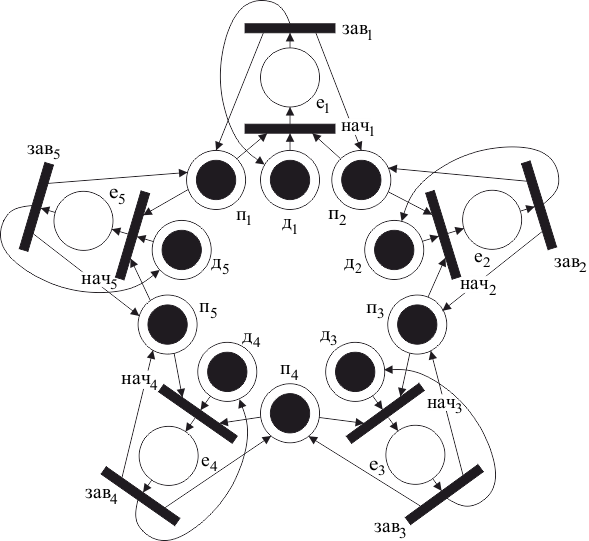

В задаче об обедающих философах возможна ситуация, в которой каждый философ возьмет вилку слева, а затем будет ждать, когда освободится вилка с правой стороны. Так они будут ждать, пока не умрут от голода. Тем самым, это состояние системы «обедающие философы» является тупиковым.
Проблема тупика в этой системе может быть решена путем следующей модификации ее правил поведения. Пусть философ при переходе из состояния размышления в состояние приема пищи берет одновременно обе вилки (слева и справа), если они свободны.
Сеть Петри (рис. 4.10) моделирует такую модифицированную систему обедающих философов, свободную от тупиков.

Рис. 4.10 – Задача об обедающих философах
В этой сети Петри позиция представляет условие «-я вилка свободна». В начальной маркировке каждая из этих позиций имеет фишку. Каждому философу соответствует две позиции: позиция – представляющая условие « -й философ думает»; и позиция – представляющая условие « -й философ ест». В начальной маркировке все позиции содержат фишку, а все позиции пусты.
Каждому философу также соответствует два перехода: переход – представляющий событие «начало приема пищи -м философом»; и переход – представляющий событие «завершение приема пищи -м философом».